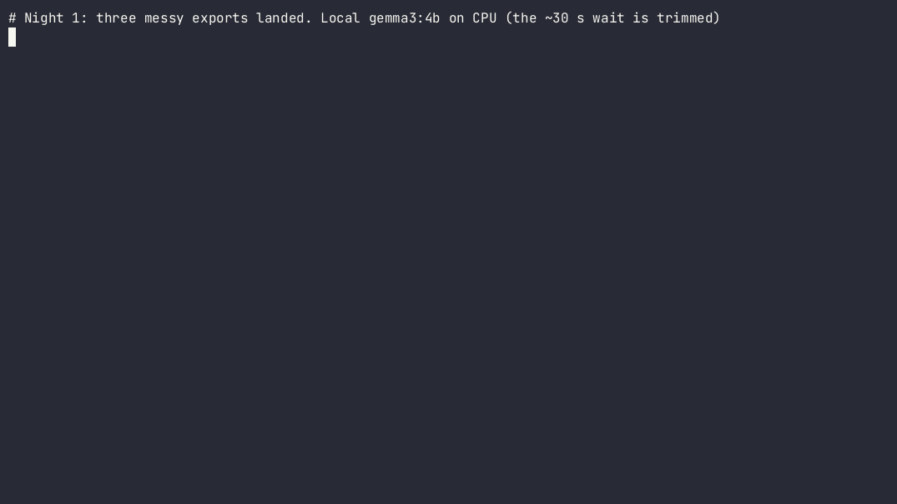

🦥
Your data drops get checked overnight. You get two lines in the morning.
View the code on GitHubMorningDrop is a small local agent for anyone who wakes up to a folder of nightly exports. While you sleep it:
latest.txt.No rows leave your machine. No API keys. If the model gets it wrong or isn't running, a plain template writes a correct report from the same facts. On a quiet night, the model isn't called at all.

Recorded on a CPU-only box; the Gemma wait is trimmed.
From gemma3:4b on the sample drops in the repo:
# Morning report, Wed Oct 21 2026 (real gemma3:4b run on the sample drops, CPU only, 21.7 s)
🔴 **The orders_2026-10-24.csv file failed for 63 rows due to currency and quantity issues.**
Prioritize fixing the currency and quantity validation rules in the orders contract.
## Suggested fixes
- `orders_2026-10-24.csv` · `currency` · *fix_data*: Correct currency values to USD, EUR, or GBP.
- `orders_2026-10-24.csv` · `quantity` · *fix_data*: Ensure quantity values are greater than or equal to 1.
- `orders_2026-10-24.csv` · `customer_id` · *fix_data*: Validate customer_id against pattern: cus_[0-9]{5}
## Drops
| File | Contract | Rows | Passed | Failed | Status |
|---|---|---:|---:|---:|---|
| `orders_2026-10-24.csv` | orders | 240 | 177 | 63 | 🔴 |
| `customers_2026-10-24.jsonl` | customers | 120 | 116 | 4 | 🟡 |
| `shipments_2026-10-24.csv` | — | 80 | 0 | 0 | 🟡 |
### orders_2026-10-24.csv
- `currency` enum_violation: 60 row(s) (e.g. Field 'currency' value "usd" not in allowed set: ["USD", "EUR", "GBP"])
- `quantity` range_violation: 2 row(s) (e.g. Field 'quantity' value -1 is below minimum 1)
- `customer_id` missing_required_field: 1 row(s) (e.g. Required field 'customer_id' is missing)
### customers_2026-10-24.jsonl
- `country` pattern_mismatch: 2 row(s) (e.g. Field 'country' value "usa" does not match required pattern)
- `email` pattern_mismatch: 1 row(s) (e.g. Field 'email' value "user33 at example.com" does not match required pattern)
- `marketing_opt_in` type_mismatch: 1 row(s) (e.g. Field 'marketing_opt_in' expected type Boolean, got string)
### shipments_2026-10-24.csv
- No contract yet. Drafted one at `contracts/_proposed/shipments.yaml`; review it and move it into `contracts/` to start enforcing.
<sub>Summary written by `gemma3:4b` on attempt 1, checked by AISchemaGate. Rows validated locally with DataContractGate. Nothing left this machine.</sub>
git clone https://github.com/nightmoose/morningdrop && cd morningdrop python -m venv .venv && . .venv/bin/activate && pip install -e . ollama pull gemma3:4b morningdrop run && cat reports/latest.txt